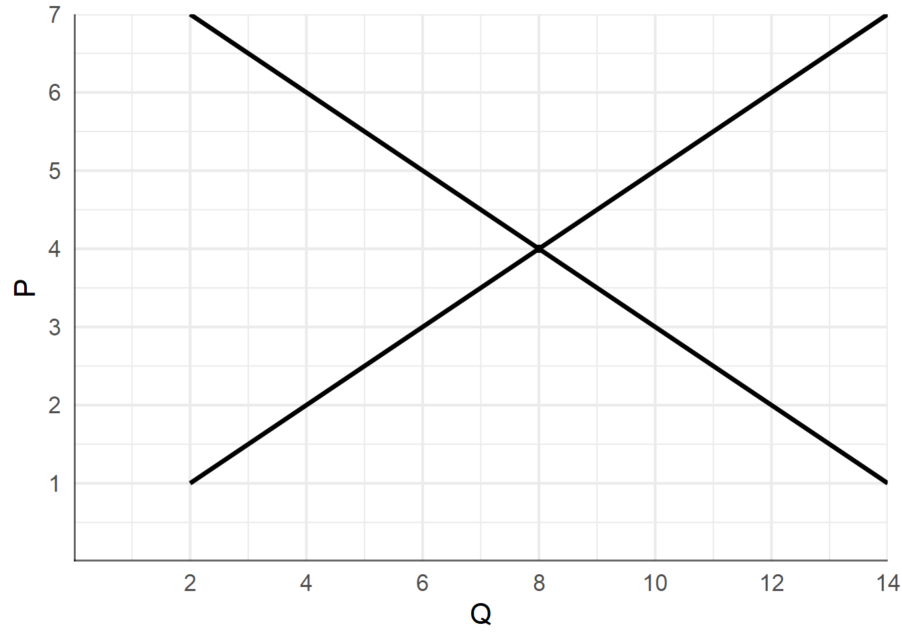
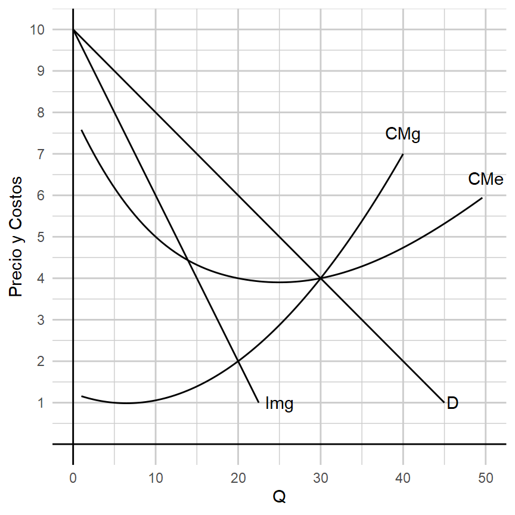

Oferta y Demanda Grafique el efecto de los siguientes shocks en el equilibrio del mercado de un bien de:
- Una campaña de publicidad que exitosa para ese bien.
- Un aumento en el precio de un bien sustituto.
- Un aumento en el precio de un insumo para su producción.
Dibuje el diagrama de oferta y demanda antes y después de la ocurrencia de cada shock. Explique el efecto sobre las variables endógenas.
Oferta y Demanda En el mercado de un bien, la demanda es \(Q_d = 200 - 12P\) y la oferta \(Q_s = 56 + 6P\). Encontrar el equilibrio del mercado y graficarlo. Explicar que pasaría si el precio vigente en el mercado fuera 9. ¿Y si fuera 7?
Salario mínimo La siguiente gráfica muestra el equilibrio en el mercado de trabajadores de la construcción.

¿Cuál es el equilibrio si el gobierno no interviene?
Si el gobierno impone un salario mínimo de $3, ¿cuál será el nivel de empleo? ¿Esta política genera desempleo?
Si el gobierno impone un salario mínimo de $6, ¿cuál será el nivel de empleo? ¿Esta política genera desempleo?
Competencia Perfecta Suponga que una automotóra que vende autos en competencia perfecta tiene un costo medio de $10.000 por unidad vendida y un precio de $12.500. ¿Cómo son los resultados económicos de la empresa? ¿Qué sucede en este mercado en el largo plazo?
Monopolio Un mercado opera como un monopolio con la siguiente estructura de demanda y costos:

- Calcular la cantidad producida y el nivel de precios.
- Calcular el ingreso total de la empresa.
- Calcular el costo total de la empresa.
Bienes Públicos Considere una fábrica que genera contaminación.
- Explicar la diferencia entre el costo marginal social y el costo marginal privado.
- Graficar el equilibrio de mercado sin intervención. Analice la eficiencia de esta solución.
- ¿Qué solución pueden implementar los gobiernos en estos casos para lograr un resultado más eficiente?
Distribución del Ingreso La siguiente table muestra la participación en la distribución del ingreso de dos países (A y B):
| Quintil | País A | País B |
|---|---|---|
| 20% más pobre | 8.7% | 3.6% |
| Segundo 20% | 14% | 8.9% |
| Tercer 20% | 18.1% | 14.8% |
| Cuarto 20% | 22.9% | 23.1% |
| 20% más rico | 36.3 | 49.6% |
- Graficar la curva de igualdad perfecta. Explicar.
- Calcular la curva de Lorenz para los dos países. ¿Cuál es el más igualitario?